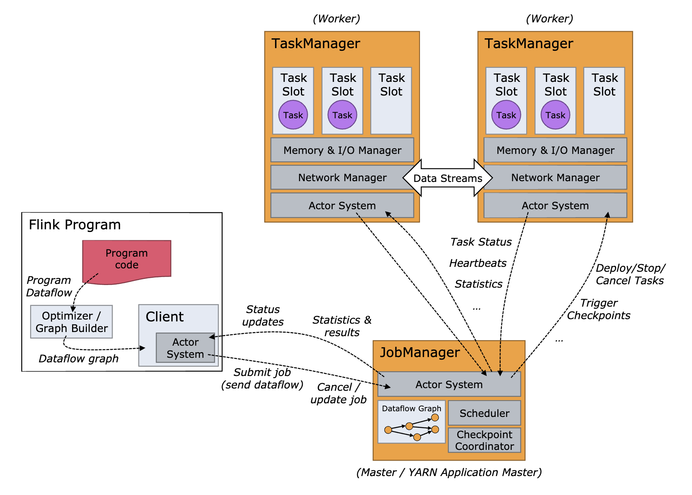
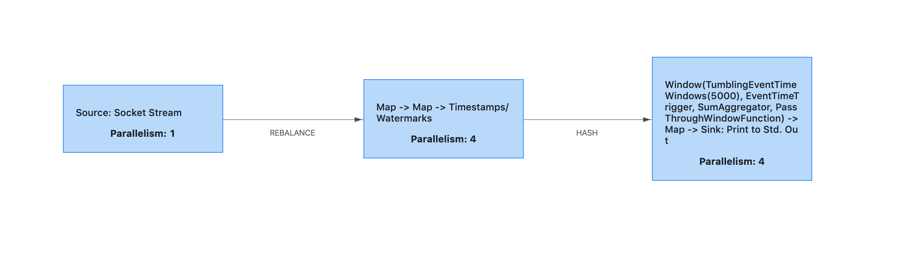

- 00 开篇词 优秀的程序员，你的技术栈中不能只有“增删改查”.md.html
- 00 预习 怎样更好地学习这门课？.md.html
- 01 为什么需要消息队列？.md.html
- 02 该如何选择消息队列？.md.html
- 03 消息模型：主题和队列有什么区别？.md.html
- 04 如何利用事务消息实现分布式事务？.md.html
- 05 如何确保消息不会丢失.md.html
- 06 如何处理消费过程中的重复消息？.md.html
- 07 消息积压了该如何处理？.md.html
- 08 答疑解惑（一） 网关如何接收服务端的秒杀结果？.md.html
- 09 学习开源代码该如何入手？.md.html
- 10 如何使用异步设计提升系统性能？.md.html
- 11 如何实现高性能的异步网络传输？.md.html
- 12 序列化与反序列化：如何通过网络传输结构化的数据？.md.html
- 13 传输协议：应用程序之间对话的语言.md.html
- 14 内存管理：如何避免内存溢出和频繁的垃圾回收？.md.html
- 15 Kafka如何实现高性能IO？.md.html
- 16 缓存策略：如何使用缓存来减少磁盘IO？.md.html
- 17 如何正确使用锁保护共享数据，协调异步线程？.md.html
- 18 如何用硬件同步原语（CAS）替代锁？.md.html
- 19 数据压缩：时间换空间的游戏.md.html
- 20 RocketMQ Producer源码分析：消息生产的实现过程.md.html
- 21 Kafka Consumer源码分析：消息消费的实现过程.md.html
- 22 Kafka和RocketMQ的消息复制实现的差异点在哪？.md.html
- 23 RocketMQ客户端如何在集群中找到正确的节点？.md.html
- 24 Kafka的协调服务ZooKeeper：实现分布式系统的“瑞士军刀”.md.html
- 25 RocketMQ与Kafka中如何实现事务？.md.html
- 26 MQTT协议：如何支持海量的在线IoT设备.md.html
- 27 Pulsar的存储计算分离设计：全新的消息队列设计思路.md.html
- 28 答疑解惑（二）：我的100元哪儿去了？.md.html
- 29 流计算与消息（一）：通过Flink理解流计算的原理.md.html
- 30 流计算与消息（二）：在流计算中使用Kafka链接计算任务.md.html
- 31 动手实现一个简单的RPC框架（一）：原理和程序的结构.md.html
- 32 动手实现一个简单的RPC框架（二）：通信与序列化.md.html
- 33 动手实现一个简单的RPC框架（三）：客户端.md.html
- 34 动手实现一个简单的RPC框架（四）：服务端.md.html
- 35 答疑解惑（三）：主流消息队列都是如何存储消息的？.md.html
- 加餐 JMQ的Broker是如何异步处理消息的？.md.html
- 结束语 程序员如何构建知识体系？.md.html
29 流计算与消息（一）：通过Flink理解流计算的原理
你好，我是李玥。
在上节课中，我简单地介绍了消息队列和流计算的相关性。在生产中，消息队列和流计算往往是相互配合，一起来使用的。而流计算也是后端程序员技术栈中非常重要的一项技术。在接下来的两节课中，我们一起通过两个例子来实际演练一下，如何使用消息队列配合流计算框架实现一些常用的流计算任务。
这节课，我们一起来基于 Flink 实现一个流计算任务，通过这个例子来感受一下流计算的好处，同时我还会给你讲解流计算框架的实现原理。下一节课中，我们会把本节课中的例子升级改造，使用 Kafka 配合 Flink 来实现 Exactly Once 语义，确保数据在计算过程中不重不丢。
无论你之前是否接触过像 Storm、Flink 或是 Spark 这些流计算框架都没有关系，因为我们已经学习了消息队列的实现原理，以及实现消息队列必备的像异步网络传输、序列化这些知识。在掌握了这些知识和底层的原理之后，再来学习和理解流计算框架的实现原理，你会发现，事情就变得非常简单了。
为什么这么说，一个原因是，对于很多中间件或者说基础框架这类软件来说，它们用到很多底层的技术都是一样；另外一个原因是，流计算和消息队列处理的都实时的、流动的数据，很多处理流数据的方法也是一样的。
哪些问题适合用流计算解决？
首先，我们来说一下，哪些问题适合用流计算来解决？或者说，流计算它的应用场景是什么样的呢？
在这里，我用一句话来回答这个问题：对实时产生的数据进行实时统计分析，这类场景都适合使用流计算来实现。
你在理解这句话的时候，需要特别注意的是，这里面有两个“实时”，一个是说，数据是“实时”产生的，另一个是说，统计分析这个过程是“实时”进行的，统计结果也是第一时间就计算出来了。对于这样的场景，你都可以考虑使用流计算框架。
因为流计算框架可以自动地帮我们实现实时的并行计算，性能非常好，并且内置了很多常用的统计分析的算子，比如 TimeWindow、GroupBy、Sum 和 Count，所以非常适合用来做实时的统计和分析。举几个例子：
- 每分钟按照 IP 统计 Web 请求次数；
- 电商在大促时，实时统计当前下单量；
- 实时统计 App 中的埋点数据，分析营销推广效果。
以上这些场景，以及和这些场景类似的场景，都是比较适合用流计算框架来实现的。特别是基于时间维度的统计分析，使用流计算框架来实现是非常方便的。
用代码定义 Job 并在 Flink 中执行
接下来，我们用 Flink 来实现一个实时统计任务：接收 NGINX 的 access.log，每 5 秒钟按照 IP 地址统计 Web 请求的次数。这个统计任务它一个非常典型的，按照 Key 来进行分类汇总的统计任务，并且汇总是按照一定周期来实时进行的，我们日常工作中遇到的很多统计分析类的需求，都可以套用这个例子的模式来实现，所以我们就以它为例来做一个实现。
假设我们已经有一个实时发送 access.log 的日志服务，它运行在本地的 9999 端口上，只要有客户端连接上来，他就会通过 Socket 给客户端发送实时的访问日志，日志的内容只包含访问时间和 IP 地址，每条数据的结尾用一个换行符 (\n) 作为分隔符。这个日志服务就是我们流计算任务的数据源。
我们用 NetCat 连接到这个服务上，看一下数据格式：
$nc localhost 9999
14:37:11 192.168.1.3
14:37:11 192.168.1.2
14:37:12 192.168.1.4
14:37:14 192.168.1.2
14:37:14 192.168.1.4
14:37:14 192.168.1.3
...
接下来我们用 Scala 语言和 Flink 来实现这个流计算任务。你可以先不用关心如何部署启动 Flink，如何设置开发环境这些问题，一起来跟我看一下定义这个流计算任务的代码：
object SocketWindowIpCount {
def main(args: Array[String]) : Unit = {
// 获取运行时环境
val env: StreamExecutionEnvironment = StreamExecutionEnvironment.getExecutionEnvironment
// 按照 EventTime 来统计
env.setStreamTimeCharacteristic(TimeCharacteristic.EventTime)
// 设置并行度
env.setParallelism(4)
// 定义输入：从 Socket 端口中获取数据输入
val hostname: String = "localhost"
val port: Int = 9999
// Task 1
val input: DataStream[String] = env.socketTextStream(hostname, port, '\n')
// 数据转换：将非结构化的以空格分隔的文本转成结构化数据 IpAndCount
// Task 2
input
.map { line => line.split("\\s") }
.map { wordArray => IpAndCount(new SimpleDateFormat("HH:mm:ss").parse(wordArray(0)), wordArray(1), 1) }
// 计算：每 5 秒钟按照 ip 对 count 求和
.assignAscendingTimestamps(_.date.getTime) // 告诉 Flink 时间从哪个字段中获取
.keyBy("ip") // 按照 ip 地址统计
// Task 3
.window(TumblingEventTimeWindows.of(Time.seconds(5))) // 每 5 秒钟统计一次
.sum("count") // 对 count 字段求和
// 输出：转换格式，打印到控制台上
.map { aggData => new SimpleDateFormat("HH:mm:ss").format(aggData.date) + " " + aggData.ip + " " + aggData.count }
.print()
env.execute("Socket Window IpCount")
}
/** 中间数据结构 */
case class IpAndCount(date: Date, ip: String, count: Long)
}
我来给你解读一下这段代码。
首先需要获取流计算的运行时环境，也就是这个 env 对象，对 env 做一些初始化的设置。然后，我们再定义输入的数据源，这里面就是我刚刚讲的，运行在 9999 端口上的日志服务。
在代码中，env.socketTextStream(hostname, port, ‘\n’) 这个语句中的三个参数分别是主机名、端口号和分隔符，返回值的数据类型是 DataStream[String]，代表一个数据流，其中的每条数据都是 String 类型的。它告诉 Flink，我们的数据源是一个 Socket 服务。这样，Flink 在执行这个计算任务的时候，就会去连接日志服务来接收数据。
定义完数据源之后，需要做一些数据转换，把字符串转成结构化的数据 IpAndCount，便于后续做计算。在定义计算的部分，依次告诉 Flink：时间从 date 字段中获取，按照 IP 地址进行汇总，每 5 秒钟汇总一次，汇总方式就是对 count 字段求和。
之后定义计算结果如何输出，在这个例子中，我们直接把结果打印到控制台上就好了。
这样就完成了一个流计算任务的定义。可以看到，定义一个计算任务的代码还是非常简单的，如果我们要自己写一个分布式的统计程序来实现一样的功能，代码量和复杂度肯定要远远超过上面这段代码。
总结下来，无论是使用 Flink、Spark 还是其他的流计算框架，定义一个流计算的任务基本上都可以分为：定义输入、定义计算逻辑和定义输出三部分，通俗地说，也就是：数据从哪儿来，怎么计算，结果写到哪儿去，这三件事儿。
我把这个例子的代码上传到了 GitHub 上，你可以在这里下载，关于如何设置环境、编译并运行这个例子，我在代码中的 README 中都给出了说明，你可以下载查看。
执行计算任务打印出的计算结果是这样的：
1> 18:40:10 192.168.1.2 23
4> 18:40:10 192.168.1.4 16
4> 18:40:15 192.168.1.4 27
3> 18:40:15 192.168.1.3 23
1> 18:40:15 192.168.1.2 25
4> 18:40:15 192.168.1.1 21
1> 18:40:20 192.168.1.2 21
3> 18:40:20 192.168.1.3 31
4> 18:40:20 192.168.1.1 25
4> 18:40:20 192.168.1.4 26
对于流计算的初学者，特别不好理解的一点是，我们上面编写的这段代码，**它只是“用来定义计算任务的代码”，而不是“真正处理数据的代码”。**对于普通的应用程序，源代码编译之后，计算机就直接执行了，这个比较好理解。而在 Flink 中，当这个计算任务在 Flink 集群的计算节点中运行的时候，真正处理数据的代码并不是我们上面写的那段代码，而是 Flink 在解析了计算任务之后，动态生成的代码。
这个有点儿类似于我们在查询 MySQL 的时候执行的 SQL，我们提交一个 SQL 查询后，MySQL 在执行查询遍历数据库中每条数据时，并不是对每条数据执行一遍 SQL，真正执行的其实是 MySQL 自己的代码。SQL 只是告诉 MySQL 我们要如何来查询数据，同样，我们编写的这段定义计算任务的代码，只是告诉 Flink 我们要如何来处理数据而已。
Job 是如何在 Flink 集群中执行的？
那我们的计算任务是如何在 Flink 中执行的呢？在讲解这个问题之前，我们先简单看一下 Flink 集群在运行时的架构。
下面这张图来自于Flink 的官方文档。

这张图稍微有点儿复杂，我们先忽略细节看整体。Flink 的集群和其他分布式系统都是类似的，集群的大部分节点都是 TaskManager 节点，每个节点就是一个 Java 进程，负责执行计算任务。另外一种节点是 JobManager 节点，它负责管理和协调所有的计算节点和计算任务，同时，客户端和 Web 控制台也是通过 JobManager 来提交和管理每个计算任务的。
我们编写好计算任务的代码后，打包成 JAR 文件，然后通过 Flink 的客户端提交到 JobManager 上。计算任务被 Flink 解析后，会生成一个 Dataflow Graph，也叫 JobGraph，简称 DAG，这是一个有向无环图（DAG），比如我们的这个例子，它生成的 DAG 是这样的：

图中的每个节点是一个 Task，每个 Task 就是一个执行单元，运行在某一个 TaskManager 的进程内。你可以想象一下，就像电流流过电路图一样，数据从 Source Task 流入，进入这个 DAG，每流过一个 Task，就被这个 Task 做一些计算和变换，然后数据继续流入下一个 Task，直到最后一个 Sink Task 流出 DAG，就自然完成了计算。
对于图中的 3 个 Task，每个 Task 对应执行了什么计算，完全可以和我们上面定义计算任务的源代码对应上，我也在源代码的注释中，用"//Task n"的形式给出了标注。第一个 Task 执行的计算很简单，就是连接日志服务接收日志数据，然后将日志数据发往下一个 Task。第二个 Task 执行了两个 map 变换，把文本数据转换成了结构化的数据，并添加 Watermark（水印）。Watermark 这个概念可以先不用管，主要是用于触发按时间汇总的操作。第三个 Task 执行了剩余的计算任务，按时间汇总日志，并输出打印到控制台上。
这个 DAG 仍然是一个逻辑图，它到底是怎么在 Flink 集群中执行的呢？你注意到图中每个 Task 都标注了一个 Parallelism（并行度）的数字吗？这个并行度的意思就是，这个 Task 可以被多少个线程并行执行。比如图中的第二个任务，它的并行度是 4，就代表 Task 在 Flink 集群中运行的时候，会有 4 个线程都在执行这个 Task，每个线程就是一个 SubTask（子任务）。注意，如果 Flink 集群的节点数够多，这 4 个 SubTask 可能会运行在不同的 TaskManager 节点上。
建立了 SubTask 的概念之后，我们再重新回过头来看一下这个图中的两个箭头。第一个箭头连接前两个 Task，这个箭头标注了 REBALANCE（重新分配），因为第一个 Task 并行度是 1，而第二个 Task 并行度是 4，意味着从第一个 Task 流出的数据将被重新分配给第二个 Task 的 4 个线程，也就是 4 个 SubTask（子任务）中，这样就实现了并行处理。这和消息队列中每个主题分成多个分区进行并行收发的设计思想是一样的。
再来看连接第二、第三这两个 Task 的箭头，这个箭头上标注的是 HASH，为什么呢？可以看到，第二个 Task 中最后一步业务逻辑是：keyBy(“ip”)，也就是按照 IP 这个字段做一个 HASH 分流。你可以想一下，第三个 Task，它的并行度是 4，也就是有 4 个线程在并行执行汇总。如果要统计每个 IP 的日志条数，那必须得把相同 IP 的数据发送到同一个 SubTask（子任务）中去，这样在每个 SubTask（子任务）中，对于每一条数据，只要在对应 IP 汇总记录上进行累加就可以了。
反之，要是相同 IP 的数据被分到多个 SubTask（子任务）上，这些 SubTask 又可能分布在多个物理节点上，那就没办法统计了。所以，第二个 Task 会把数据按照 IP 地址做一个 HASH 分流，保证 IP 相同的数据都发送到第三个 Task 中相同的 SubTask（子任务）中。这个 HASH 分流的设计是不是感觉很眼熟？我们之前课程中讲到的，严格顺序消息的实现方法：通过 HASH 算法，让 key 相同的数据总是发送到相同的分区上来保证严格顺序，和 Flink 这里的设计就是一样的。
最后在第三个 Task 中，4 个 SubTask 并行进行数据汇总，每个 SubTask 负责汇总一部分 IP 地址的数据。最终打印到控制台上的时候，也是 4 个线程并行打印。你可以回过头去看一下输出的计算结果，每一行数据前面的数字，就是第三个 Task 中 SubTask 的编号。
到这里，我们不仅实现并运行了一个流计算任务，也理清了任务在 Flink 集群中运行的过程。
小结
流计算框架适合对实时产生的数据进行实时统计分析。我们通过一个“按照 IP 地址统计 Web 请求的次数”的例子，学习了 Flink 实现流计算任务的原理。首先，我们用一段代码定义了计算任务，把计算任务代码编译成 JAR 包后，通过 Flink 客户端提交到 JobManager 上。
这里需要注意的是，我们编写的代码只是用来定义计算任务，和在 Flink 节点上执行的真正做实时计算的代码是不一样的。真正执行计算的代码是 Flink 在解析计算任务后，动态生成的。
Flink 分析计算任务之后生成 JobGraph，JobGraph 是一个有向无环图，数据流过这个图中的节点，在每个节点进行计算和变换，最终流出有向无环图就完成了计算。JobGraph 中的每个节点是一个 Task，Task 是可以并行执行的，每个线程就是一个 SubTask。SubTask 被 JobManager 分配给某个 TaskManager，在 TaskManager 进程中的一个线程中执行。
通过分析 Flink 的实现原理，我们可以看到，流计算框架本身并没有什么神奇的技术，之所以能够做到非常好的性能，主要有两个原因。一个是，它能自动拆分计算任务来实现并行计算，这个和 Hadoop 中 Map Reduce 的原理是一样的。另外一个原因是，流计算框架中，都内置了很多常用的计算和统计分析的算子，这些算子的实现都是经过很多大神级程序员反复优化过的，不仅能方便我们开发，性能上也比大多数程序员自行实现要快很多。